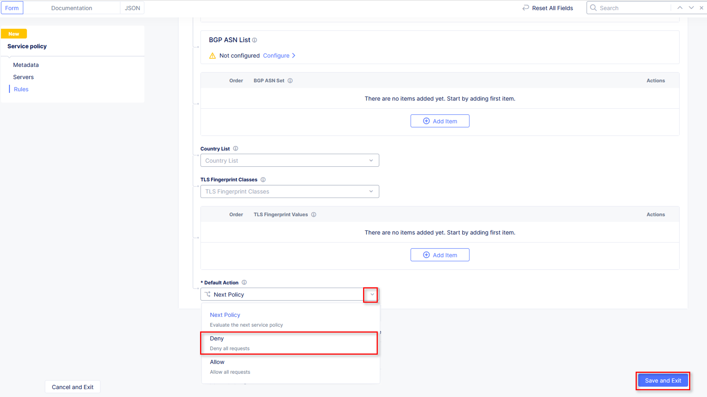

Lab 3: Exploring Service Policies and Routes
The following lab tasks will guide you the configuration of various Service Policies
which can be used to implement a variety of security controls.
Expected Lab Time: 20 minutes
Task 1: Creating Local Namespace Service Policies
In this task you will add geo-filter and allowed-ip based service policies.
Within Web App & API Protection, under the Manage section in the left-hand
navigation menu, click Service Policies. In the flyout menu, click the Service
Policies link.
Observe the existing Service Policies and note they are source from the shared
namespace which means they could be used within any other namespace.
Click Add Service Policy in the top left area as shown.
Note
Using shared namespace Service Policies provides the ability to use API-updated
policy controls to implement common service security across multiple resources.
|
 |
 |
In the Metadata section enter geo-filter for the Name and then click Rules
in the left-hand navigation.
Select Denied Sources from the dropdown for Select Policy Rules.
|
 |
Locate the Country List input field and begin typing Fiji and then select it from
the list that appears.
Click the dropdown for Default Action. Observe the available options and select
Next Policy then click Save and Exit.
|
 |
 |
- Observe the resulting added geo-filter Service Policy added in your namespace.
|
 |
Open another tab in your browser (Chrome shown), navigate to https://ipinfo.io and note
your IP address as shown. (example provided)
|
 |
- Return to the Service Policies window and click Add Service Policy.
|
 |
In the Metadata section enter allowed-ip for the Name and then click
Rules in the left-hand navigation.
Select Allowed Sources from the dropdown for Select Policy Rules.
|
 |
- In the updated IPv4 Prefix List section, click Configure link.
Note
The section just below “List of IP Prefix Set” allows you to build a collection of
of various IP lists which can be maintained through API controls.
|
 |
Enter your IP address captured in Step 9 above with mask notation (/32) as shown then
click the Apply button.
|
 |
In the resulting window, observer IPv4 Prefix List in now configured then scroll to
the bottom of the Rules section.
|
 |
Locate and click the dropdown for Default Action, and select Deny then click
Save and Exit.
|
|  |
- Observe the resulting added allowed-ip Service Policy added in your namespace.
|
 |
Task 2: Attaching Service Policies and configuring IP Reputation
The following steps will enable you to attach Service Policies to your configured Load Balancer.
It will also help you understand additional approaches for Service Policies.
Return to the Load Balancer in the F5 Distributed Cloud Console,**Manage > Load Balancer**
> HTTP Load Balancers and use the Action Dots and click Manage Configuration
Click Edit Configuration in the top right-hand corner.
|
 |
 |
- Click Common Security Controls in the left-hand navigation.
- From the Service Policies dropdown, select Apply Specified Service Policies.
- In the added menu for Apply Specified Service Policies, click Configure.
|
 |
 |
In the resulting Policies window, use the List of Policies dropdown to select
your <namespace>/geo-filter Service Policy then click Apply.
|
 |
Returning to the Load Balancer window, you will note the changes shown in your
Service Policies section.
As we are already in this section, we will go ahead and add IP reputation filtering. This
can be added as a Service Policy (shared or local namespace) or as a direct configuration.
To start, the IP Reputation as a direct configuration (on the Load Balancer), locate the
IP Reputation section and click the dropdown menu, then select Enable.
|
 |
Using the List of IP Threat Categories to choose you may add any of the available
Threat Categories listed.
Select Spam Sources and Tor Proxy, then click Other Settings in the left-hand
navigation or scroll to the bottom of the window and click the Save and Exit button.
|
 |
 |
 |
In your browser (Chrome shown), navigate to your application/Load Balancer configuration:
http://<namespace>.lab-sec.f5demos.com.
You should receive a 403 Forbidden error. This is due to a Service Policy configuration
error. Because we only attached the geo-filter Service Policy and the Default
Action was Next Policy, there is no other or next policy to “Allow” traffic,
therefore, all other traffic is disallowed producing the 403. This is will also show in
the Security Events window.
|
 |
Return to Web App & API Protection in the F5 Distributed Cloud Console, Manage >
Load Balancer > HTTP Load Balancers and use the Action Dots and click Manage
Configuration.
Click Edit Configuration in the top right-hand corner.
|
 |
 |
- Click Common Security Controls in the left-hand navigation.
- From the Service Policies section, click Edit Configuration.
|
 |
In the resulting window click Add Item as shown. From the added dropdown select the
<namespace>/allowed-ip Service Policy previously created.
Observe the order. Service Policies must be ordered correctly in a order to process
traffic as intended. Click Apply when completed.
Note
Because the “allowed-ip” begins with an allowed ip (yours) and ends in a “Deny” a
positive security model will be applied (denying all other traffic). Similar positive or
negative service policies can be created and applied
|
 |
 |
 |
Click Other Settings in the left-hand navigation or scroll to the bottom of the
HTTP Load Balancer configuration and click Save and Exit.
|
 |
In your browser (Chrome shown), navigate to your application/Load Balancer configuration:
http://<namespace>.lab-sec.f5demos.com. You should now be able to successfully
access the application.
|
 |
Service Policies provide a powerful framework to implement both positive and negative security models
and you matching criteria from client requests (headers, parameters, paths, request body payload) to
effectively control the access to protected applications and APIs.
Task 3: Observing Route Configurations
The following steps will enable you to attach Service Policies to your configured Load Balancer.
It will also help you understand additional approaches for Service Policies.
Within Web App & API Protection in the F5 Distributed Cloud Console, Manage >
Load Balancer > HTTP Load Balancers and use the Action Dots and click Manage
Configuration.
Click Edit Configuration in the top right-hand corner.
|
 |
 |
- Click Routes in the left-hand navigation and the click Configure as shown.
- In Routes window, click the Add Item link.
|
 |
 |
Observe the various route types and matching criteria controls that can be leveraged to
securely control application flow, perform pool targeting, make path responses or develop
custom control to secure protected applications.
An example walkthrough of Simple Route is shown but feel free to look at all the
route types: .
- Simple Route: Matches on path and/or HTTP method and forward traffic to the
- associated pool.
- Redirect Route: Matches on path and/or HTTP method and redirects matching traffic
- to a different URL.
- Direct Response Route: Matches on path and/or HTTP method and responds directly to
- matching traffic.
- Custom Route Object: Leverages a reference route object created outside this view.
Click Cancel and Exit once through with exploring the feature.
|
 |
 |
 |
End of Lab 3: This concludes Lab 3, feel free to review and test the configuration.
A Q&A session will begin shortly to conclude the overall lab.
|
 |
{kind=link}